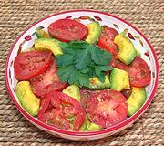

|
Avocado - Tomato saladPuerto Rico - Ensalada de Aguacate y Tomate | ||||
| Makes: Effort: Sched: DoAhead: |
2 # * 12 min Short |
This is a simple, but interesting Tropical Salad. It can be made a few hours ahead, as the Vinegar in the dressing will keep the Avocado from discoloring. | |||
|
|
1-1/4 1 5 ------- 2 3 1/2 1 dash -------- |
# # oz --- T T T t ---- |
Avocado (1) Plum Tomatoes Onion,red -- Dressing Cider Vinegar Olive Oil ExtV Salt Pepper, black Hot Sauce (2) --------- |
Make - (12 min)
|